Idle: goedgekeurd en afgerond
4,4 seconden
Gekozen proef 01, geen verdere verfijning nodigAdemproef 02
4,4 seconden
Visueel onvoldoende, niet gekozenIdle is afgerond. De gebruiker koos proef 01 met dezelfde zes oorspronkelijke frames en 4400 ms per lus. Een nieuwe ademhaling is niet nodig. Proef 02 blijft als afgewezen experiment bewaard. De keuze is centraal overgenomen; appintegratie is hier niet uitgevoerd.
Lopen links: goedgekeurd en afgerond
Drawing 02, twaalf frames met vier nieuwe beenposes. Het oorspronkelijke bovenlijf blijft behouden. De lus duurt 1060 ms. De eerdere timingproef is niet gekozen. Vergelijk origineel en gekozen versie.
Lopen rechts: goedgekeurd en afgerond
Twaalf frames, met A_landing en C_extension elk tweemaal naast de acht bronframes. Lus 1060 ms; beide helften 530 ms. Gekozen versie: inbetweens_02. 12 frames, 1060 ms per lus.
Nadenken: goedgekeurd en afgerond
Zes frames met vier unieke houdingen. Bronpixels buiten de armregio blijven behouden. De kleine vormwissel bij vingers en kin is door de gebruiker geaccepteerd. Gekozen versie: thinking_drawing_02. 6 frames, 4400 ms per lus.
Controleren: goedgekeurd en afgerond
Elf frames met twee nieuwe armhoudingen, ook op de terugweg. Ogen open en begin en einde identiek. Dit blijft inspectie, geen succesbevestiging. Gekozen versie: drawn02. 11 frames, 2800 ms per lus.
Springen: goedgekeurd en afgerond
Negen frames met vier nieuwe tussenposes. Dezelfde goedgekeurde tekenproef 02; niet timingproef 01. Gekozen versie: proposal02. 9 frames, 1800 ms per lus.
Teleurstelling: goedgekeurd en afgerond
Negen frames met vaste oorspronkelijke lichaamsbouw. Alleen de armstukken bewegen; begin en einde zijn hetzelfde bronbeeld. Gekozen versie: arm_03. 9 frames, 3400 ms per lus.
Iets vragen: goedgekeurd en afgerond
Drie getekende armstanden, vragend gebaar en knippering. Zes unieke beelden in elf afspeelstappen. Gekozen versie: drawn_gesture_03. 11 frames, 3200 ms per lus.
Begroeten: goedgekeurd en afgerond
Acht stappen met vaste oorspronkelijke basis en uitsluitend wisselend armgebied. De export is pixelgelijk aan de goedgekeurde browsercompositie. Gekozen versie: body_lock_03. 8 frames, 2400 ms per lus.
Wat we al hebben
Negen animaties met 57 frames, plus zestien statische kijkrichtingen. De neutrale houding is het eerste idle frame en telt niet dubbel.
| Animatie | Gebaar en toepassing | Frames |
|---|
 | Rustidle | Staan met de map, rustig knipperenBeschikbaar of discreet wachten | 61100 ms |
| Lopen rechtsrunning-right | Zijwaartse passen naar rechtsVerplaatsen of verslepen | 81060 ms |
| Lopen linksrunning-left | Zijwaartse passen naar linksVerplaatsen of verslepen | 81060 ms |
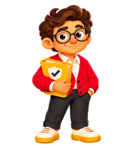 | Begroetenwaving | Vrije hand omhoog en terugKorte begroeting | 4700 ms |
| Springenjumping | Omhoog en landenUitbundig succes, spaarzaam gebruiken | 5840 ms |
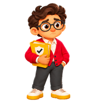 | Teleurstellingfailed | Bezorgde blik, hand naar het hoofdMislukte actie | 81220 ms |
| Vragend wachtenwaiting | Open handpalm naar de gebruikerVerduidelijking of invoer vragen | 61010 ms |
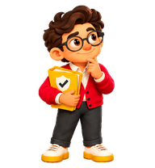 | Nadenkenrunning | Hand bij kin en bril, blik schuin omhoogZoeken en verwerken | 6820 ms |
| Controlerenreview | Kijken en wijzen naar de mapBron of resultaat nakijken | 61030 ms |
Bekijk de negen originele bewegingen
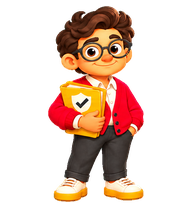
Rust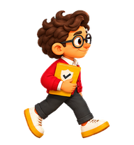
Lopen rechts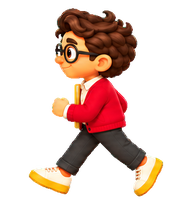
Lopen links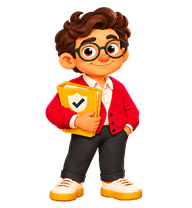
BegroetenSpringenTeleurstellingVragend wachtenNadenkenControlerenDe zestien bestaande kijkrichtingen
Met de klok mee vanaf boven. Losse houdingen, nog geen vloeiende overgangsanimatie.
0°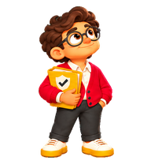
22.5°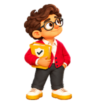
45°67.5°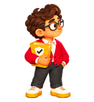
90°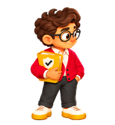
112.5°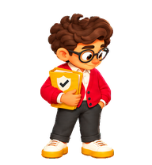
135°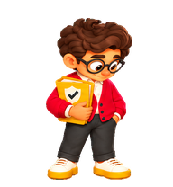
157.5°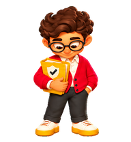
180°202.5°225°247.5°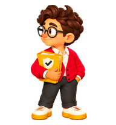
270°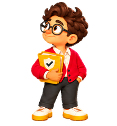
292.5°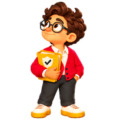
315°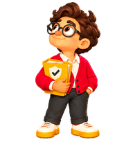
337.5° Wat eventueel nog ontbreekt
1. Een klein bevestigend knikjeDe duidelijkste nieuwe toevoeging. Een rustige afronding als een antwoord klaar is. Springen bestaat, maar is nadrukkelijker.2. Een zachte overgang naar aandachtig kijkenDe kijkhoudingen bestaan al. Eerst hergebruiken; alleen een korte overgang tekenen als het wisselen te abrupt blijkt.3. Discreet wachten op een collegaGeen nieuwe pose nodig om te beginnen. Rustig idle past beter dan de vragende open hand, die iets van de gebruiker lijkt te verlangen.
Niet elke bestaande pose wordt al door de app aangeroepen. De inventaris maakt onderscheid tussen aanwezige bestanden, gelezen appkoppelingen en voorstellen. Er is geen nieuwe appkoppeling toegevoegd.